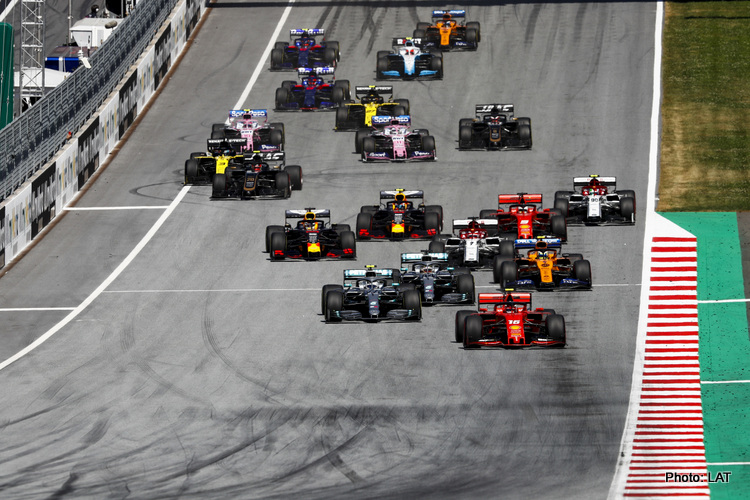
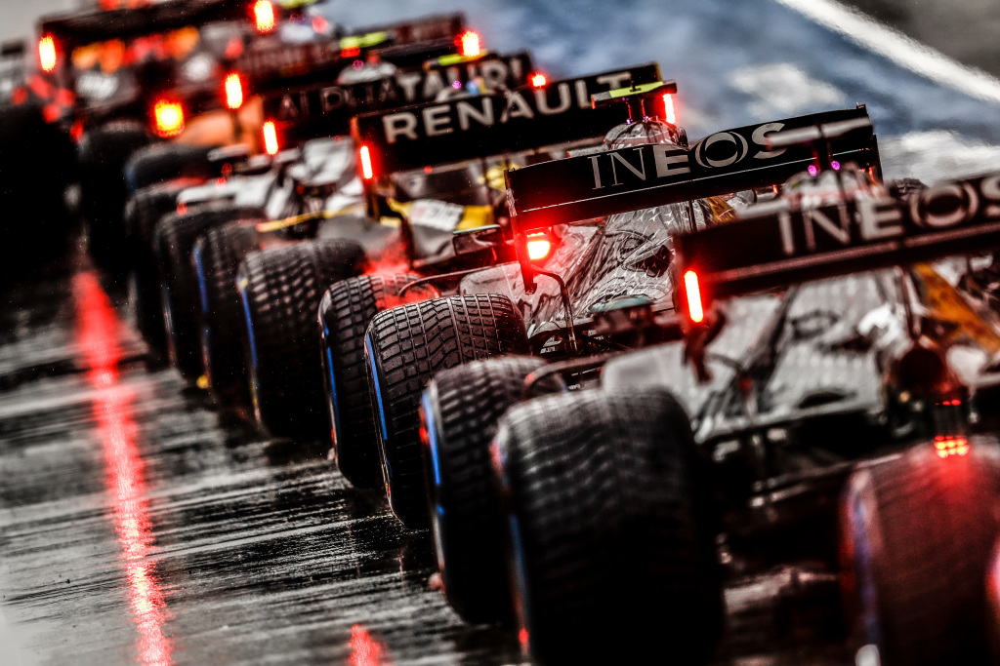
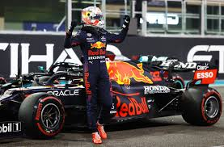

Formula1
.
Season 2020
The 2020 FIA Formula One World Championship was the motor racing
championship for Formula One cars which was the 71st running of
the Formula One World Championship. It marked the 70th
anniversary of the first Formula One World Drivers'
Championship. The championship was recognised by the governing
body of international motorsport, the Fédération Internationale
de l'Automobile (FIA), as the highest class of competition for
open-wheel racing cars. Drivers and teams competed for the
titles of World Drivers' Champion and World Constructors'
Champion, respectively. The championship was originally due to
start in March, but the start was postponed until July in
response to the COVID-19 pandemic. The season was due to be
contested over a record of 22 Grands Prix, but as some races
were cancelled and new races were added to replace them, a total
of 17 races were run. The season started in July with the
Austrian Grand Prix and ended in December with the Abu Dhabi
Grand Prix. Due to the COVID-19 pandemic, the first eight rounds
of the championship were run behind closed doors, with the rest
of the races being run at a reduced capacity or also behind
closed doors due to the second wave of the COVID-19 pandemic.
Lewis Hamilton and Mercedes entered the season as the reigning
World Drivers' and World Constructors' champions respectively,
after they both won their sixth championship in 2019. At the
Emilia Romagna Grand Prix, Mercedes secured their seventh
consecutive Constructors' Championship making them the only team
to win seven consecutive championships, breaking Ferrari's
record from 1999 to 2004. Mercedes also maintained the
distinction of being the only team to win the championship since
the 2014 turbo-hybrid engine regulation changes were enacted.
Hamilton equalled Michael Schumacher's record of seven World
Drivers' Championships at the Turkish Grand Prix and broke
Schumacher's previous record of 91 career wins at the Portuguese
Grand Prix. After purchasing the commercial rights to the sport
from CVC Capital Partners in January 2017, Liberty Media
announced plans to expand the Formula One calendar using a
concept they termed "destination races" and modelled on the
Singapore Grand Prix. Under the "destination races" model,
Grands Prix would be established in or near key tourist
destinations and integrate racing, entertainment and social
functions with the aim of making the sport more accessible and
appealing to a wider audience. Several countries and venues
announced plans to bid for a Grand Prix, with two bids being
successful: The Vietnamese Grand Prix was announced as the first
new race created under Liberty's management. The race was given
a provisional date of April 2020 and was planned to take place
in the capital Hanoi on the Hanoi Circuit, but was later
cancelled. The Dutch Grand Prix was due to be revived, with the
race scheduled to take place at the Circuit Zandvoort. The 2020
race would have marked the first time the Dutch Grand Prix has
been run since 1985. However, the race was later cancelled.
Liberty Media initially expected that the 2020 calendar would
consist of twenty-one Grands Prix and that any new races would
come at the expense of existing events, but later negotiated an
agreement with the teams to allow up to twenty-two Grands Prix.
Several further changes were made between the 2019 and 2020
calendars, with the German Grand Prix discontinued and the
Mexican Grand Prix planned to be rebranded as the Mexico City
Grand Prix before it was cancelled.


.
Season 2021
The 2021 FIA Formula One World Championship was a motor racing
championship for Formula One cars which was the 72nd running of
the Formula One World Championship. It is recognised by the
Fédération Internationale de l'Automobile (FIA), the governing
body of international motorsport, as the highest class of
competition for open-wheel racing cars. The championship was
contested over twenty-two Grands Prix, and held around the
world. Drivers and teams competed for the titles of World
Drivers' Champion and World Constructors' Champion,
respectively. Max Verstappen won his first World Championship
(and the first for a Dutch driver), driving for Red Bull
Racing-Honda. Lewis Hamilton, the defending champion, finished
runner-up, driving for Mercedes. Hamilton's teammate Valtteri
Bottas was third, driving for Mercedes Mercedes won their eighth
consecutive Constructors' Championship. At season's end in Abu
Dhabi, Max Verstappen of Red Bull Racing-Honda won the Drivers'
Championship for the first time in his career. Verstappen became
the first ever driver from the Netherlands, the first
Honda-powered driver since Ayrton Senna in 1991, the first Red
Bull driver since Sebastian Vettel in 2013 and the first
non-Mercedes driver in the turbo-hybrid era to win the World
Championship. Honda became the second engine supplier in the
turbo-hybrid era to power a championship winning car, after
Mercedes. Four-time defending and seven-time champion Lewis
Hamilton of Mercedes finished runner up. Mercedes retained the
Constructors' Championship for the eighth consecutive season.
The season ended with a controversial finish, with the two title
rivals for the drivers' crown entering the last race of the
season with equal points. Verstappen sealed the title after
winning the season-ending Abu Dhabi Grand Prix after a last-lap
restart pass on Hamilton following a contentious conclusion of a
safety car period. Mercedes initially protested the results, and
later decided not to appeal after their protest was denied. The
incident led to key structural changes to race control,
including the removal of Michael Masi from his role as race
director and the implementation of a virtual race control room,
who assist the race director. Unlapping procedures behind the
safety car were to be reassessed and presented by the F1
Sporting Advisory Committee prior to the start of the 2022 World
Championship season. On 10 March 2022 the FIA World Motor Sport
Council report on the events of the final race of the season was
announced, and that the "Race Director called the safety car
back into the pit lane without it having completed an additional
lap as required by the Formula 1 Sporting Regulations", however
also noted that the "results of the 2021 Abu Dhabi Grand Prix
and the FIA Formula One World Championship are valid, final and
cannot now be changed". This was the first season since 2008
where the champion driver was not from the team that took the
constructors' title. The season was also the final season in the
sport for 2007 World Champion Kimi Räikkönen.

.
Season 2022
The 2022 FIA Formula One World Championship was a motor racing
championship for Formula One cars, which was the 73rd running of
the Formula One World Championship. It is recognised by the
Fédération Internationale de l'Automobile (FIA), the governing
body of international motorsport, as the highest class of
competition for open-wheel racing cars. The championship was
contested over twenty-two Grands Prix, which were held around
the world, and ended earlier than in recent years to avoid
overlapping with the FIFA World Cup. Drivers and teams competed
for the titles of World Drivers' Champion and World
Constructors' Champion, respectively. The 2022 championship saw
the introduction of significant changes to the sport's technical
regulations. These changes had been intended to be introduced in
2021, but were delayed until 2022 in response to the COVID-19
pandemic. Max Verstappen, who was the reigning Drivers'
Champion, claimed his second title at the Japanese Grand Prix,
while his team, Red Bull Racing, achieved their fifth World
Constructor Championship, and first since 2013, at the following
United States Grand Prix. Mercedes were the reigning
Constructors' Champion. This was the final season for four-time
World Champion Sebastian Vettel. Seven-time World Champion Lewis
Hamilton endured a difficult season with Mercedes, failing to
secure either a pole position or Grand Prix win during the
season, the first time either occurrence had happened in his
Formula One career since it began in 2007.The following
constructors and drivers were under contract to compete in the
2022 World Championship. All teams competed with tyres supplied
by Pirelli. Each team was required to enter at least two
drivers, one for each of the two mandatory cars. In at least two
sessions of Grand Prix weekends, one for each car entered in the
championship, each team was required to field a driver who had
not taken part in more than two Grands Prix. The following
drivers were entered at selected events to drive in free
practice. Honda initially stated that they would not supply
power units beyond 2021. The company had provided power units to
Scuderia AlphaTauri (previously called Scuderia Toro Rosso)
since 2018 and to Red Bull Racing since 2019. Initially, Red
Bull Racing planned to take over Honda's engine programme and
manage it in-house, under a new division called Red Bull
Powertrains. The decision was made after lobbying the other nine
teams to negotiate an engine development freeze until 2025. Red
Bull Racing acknowledged that they would have left the
championship if the engine development freeze had not been
agreed to as they could not develop a brand new engine, and both
Red Bull Racing and Renault were unwilling to resume their
former partnership. Honda later agreed to continue supplying Red
Bull Racing and AlphaTauri for 2023 with engines for this
season, which were rebadged to Red Bull Powertrains. In addition
to the assembly and maintenance of the engines, Honda continued
to provide Red Bull Racing and AlphaTauri with technical and
operational oversight during race weekends. Driver changes Zhou
Guanyu (left) made his Formula One debut driving for Alfa Romeo.
Nikita Mazepin (centre), who was originally going to compete for
Haas, had his contract terminated amidst the Russian invasion of
Ukraine. Mazepin was subsequently replaced by Kevin Magnussen
(right). Fernando Alonso (left) broke Kimi Räikkönen's (right)
record for the most race starts and race entries at the
Singapore and Japanese Grands Prix, respectively. Kimi Räikkönen
retired following the conclusion of the 2021 championship;
Räikkönen won 21 races, and the 2007 World Drivers' Championship
across a 19 season Formula career. Räikkönen's seat at Alfa
Romeo was filled by Valtteri Bottas, who left Mercedes after 5
seasons. George Russell replaced Bottas, vacating the seat that
he had held for the past 3 seasons at Williams. Russell was
replaced by former Red Bull Racing driver Alex Albon. Zhou
Guanyu, who finished third in the 2021 Formula 2 Championship,
joined Alfa Romeo, in place of Antonio Giovinazzi, who had been
at the team since 2019. Zhou became the first Chinese driver to
compete in Formula One. Nikita Mazepin was originally contracted
to compete for Haas, as part of a multi-year contract that
started in 2021. Following the Russian invasion of Ukraine and
the resultant cancellation of Uralkali's title sponsorship of
Haas, his contract was terminated. He was replaced by Kevin
Magnussen, who had last competed in 2020 with the same team.
Mid-season changes Ahead of the Bahrain Grand Prix, Sebastian
Vettel tested positive for coronavirus. He was replaced at the
event, and the subsequent Saudi Arabian Grand Prix by Aston
Martin by reserve driver Nico Hülkenberg, who last raced at the
2020 Eifel Grand Prix, driving for former team Racing Point.
During the Italian Grand Prix weekend, Alex Albon suffered from
appendicitis. He was replaced at Williams by the Mercedes
reserve driver 2020–21 Formula E and 2019 Formula 2 Champion
Nyck de Vries, who made his Formula One race debut.
.jpg)
.jpg)